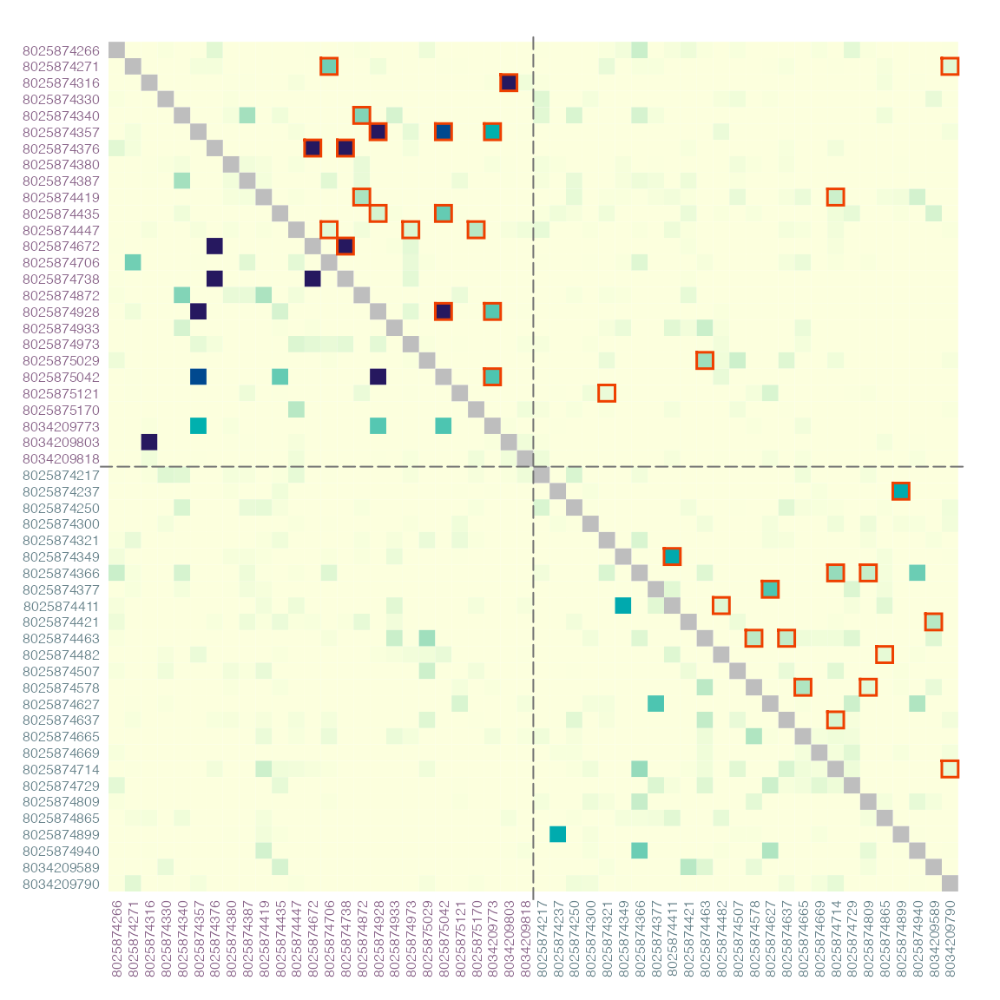
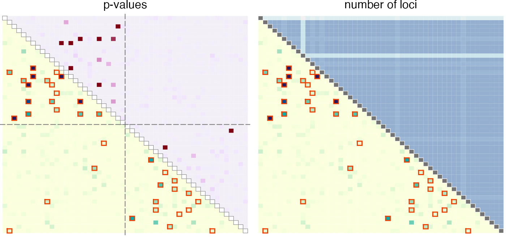
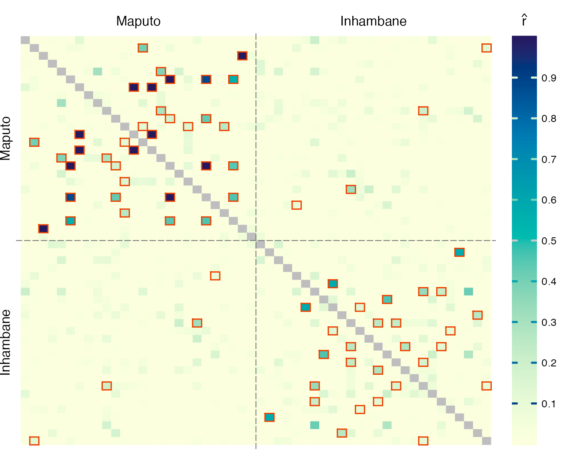
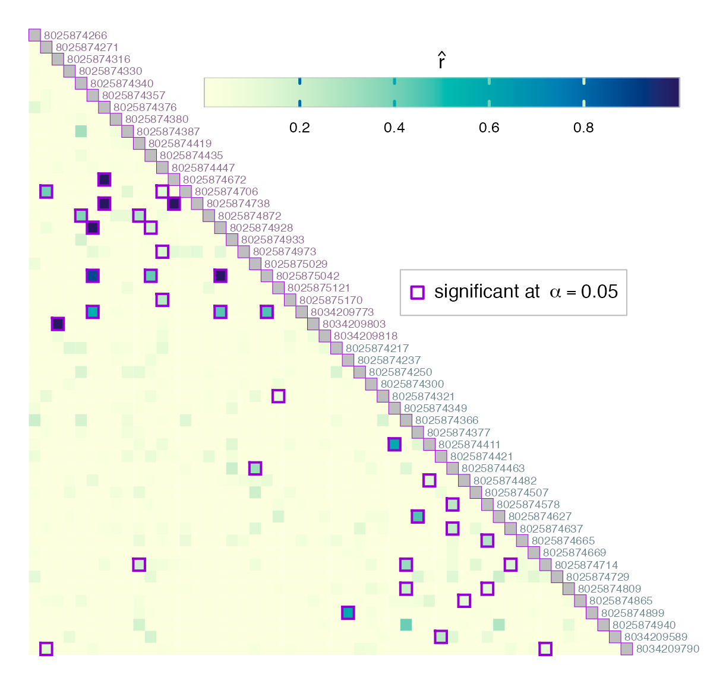
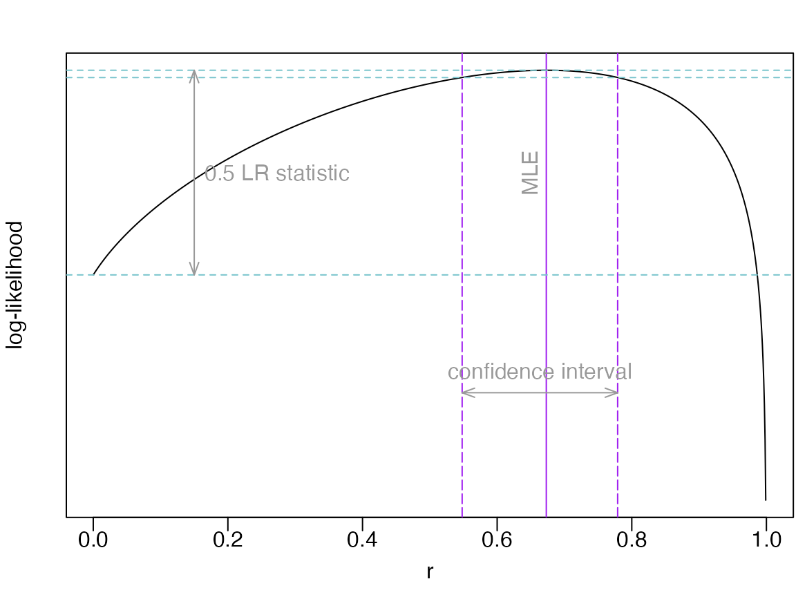

Dcifer: Genetic Distance Between Polyclonal Infections
Source:vignettes/vignetteDcifer.Rmd
vignetteDcifer.RmdPackage dcifer calculates genetic distance between
polyclonal infections by estimating relatedness from biallelic and
multiallelic data [1]. In addition to
estimates, the package provides a likelihood function and statistical
inference. Functions for reading and reformatting data, performing
preparatory steps, and visualizing the results are also included. We
will illustrate the analysis process using microhaplotype data from two
health facilities in Maputo and Inhambane provinces of Mozambique [2].
Read and reformat data, estimate COI and population allele frequencies
Dcifer relatedness estimation requires sample data in a specific
format and estimates of complexity of infection (COI) and population
allele frequencies. Here is an example of some preparation steps using
Mozambique dataset. First, read in original data stored in a
.csv file. The name of that file is the first argument to
the function that reads and reformats the data:
sfile <- system.file("extdata", "MozParagon.csv", package = "dcifer")
dsmp <- readDat(sfile, svar = "sampleID", lvar = "locus", avar = "allele")
str(dsmp, list.len = 2)> List of 52
> $ 8025874217:List of 87
> ..$ t1 : Named num [1:5] 1 1 0 0 0
> .. ..- attr(*, "names")= chr [1:5] "D10--D6--FCR3--V1-S.0" "HB3.0" "t1.0" "t1.1" ...
> ..$ t10 : Named num [1:4] 1 0 0 0
> .. ..- attr(*, "names")= chr [1:4] "D10--D6--HB3.0" "t10.0" "t10.2" "U659.0"
> .. [list output truncated]
> $ 8025874237:List of 87
> ..$ t1 : Named num [1:5] 0 0 0 0 1
> .. ..- attr(*, "names")= chr [1:5] "D10--D6--FCR3--V1-S.0" "HB3.0" "t1.0" "t1.1" ...
> ..$ t10 : Named num [1:4] 1 0 0 0
> .. ..- attr(*, "names")= chr [1:4] "D10--D6--HB3.0" "t10.0" "t10.2" "U659.0"
> .. [list output truncated]
> [list output truncated]
# optionally, extract location information
meta <- unique(read.csv(sfile)[c("sampleID", "province")])
meta <- meta[match(names(dsmp), meta$sampleID), ] # order samples as in dsmpNext, estimate COI for all the samples - here we use naive
estimation, first ranking loci of a sample by the number of detected
alleles, and then using a locus with a prescribed rank
(lrank) to determine COI:
lrank <- 2
coi <- getCOI(dsmp, lrank = lrank)Finally, estimate population allele frequencies, adjusting for COI:
> List of 87
> $ t1 : Named num [1:5] 0.4239 0.2808 0.1116 0.0422 0.1415
> ..- attr(*, "names")= chr [1:5] "D10--D6--FCR3--V1-S.0" "HB3.0" "t1.0" "t1.1" ...
> $ t10 : Named num [1:4] 0.8539 0.00942 0.00951 0.12717
> ..- attr(*, "names")= chr [1:4] "D10--D6--HB3.0" "t10.0" "t10.2" "U659.0"
> [list output truncated]In some situations, population allele frequencies might be estimated
from a different (e.g. larger) dataset and are provided separately (in a
.csv file). In that case, after the frequencies are read
in, they need to be checked against the the existing data object to make
sure that all the loci and alleles are in the same order. Function
matchAfreq performs the checking and rearranges sample data
to conform to the provided allele frequencies. For that procedure, loci
and alleles in both lists (dsmp and afreq)
have to be named; otherwise the names are not required, and the order of
loci and alleles is assumed to be the same for sample data and allele
frequencies. If afreq contains “extra” alleles that are not
listed in dsmp, these alleles are added to
dsmp. The opposite situation (alleles listed and present in
dsmp but not listed in afreq) will result in
an error.
afile <- system.file("extdata", "MozAfreq.csv", package = "dcifer")
afreq2 <- readAfreq(afile, lvar = "locus", avar = "allele", fvar = "freq")
dsmp2 <- matchAfreq(dsmp, afreq2)Estimate relatedness
As a first step in relatedness estimation, we set \(M = 1\) (only one pair of strains between
two infections can be related) and test the hypothesis that infections
are unrelated (\(H_0\!: r = 0\)). This
is done with ibdDat function. Then we explore significantly
related pairs in more detail.
Optionally, sort samples by clinic or geographic location:
provinces <- c("Maputo", "Inhambane")
nsite <- table(meta$province)[provinces]
ord <- order(factor(meta$province, levels = provinces))
dsmp <- dsmp[ord]
coi <- coi[ ord]
dres <- ibdDat(dsmp, coi, afreq, pval = TRUE, confint = TRUE, rnull = 0,
alpha = 0.05, nr = 1e3) Look at the results for a single pair of samples:
dres[9, 5, ] > estimate p_value CI_lower CI_upper
> 0.31100000 0.06203213 0.00000000 0.68000000Visualize the results
When pairwise relatedness is calculated within a single dataset,
ibdDat returns triangular matrices. For plotting, we can
make them symmetric. Then significantly related pairs can be outlined in
either or both triangles.
Display the results with sample ID’s written on the margins. Label colors correspond to locations (health facilities):
par(mar = c(3, 3, 1, 1))
nsmp <- length(dsmp)
atsep <- cumsum(nsite)[-length(nsite)]
# create symmetric matrix
dmat <- dres[, , "estimate"]
dmat[upper.tri(dmat)] <- t(dmat)[upper.tri(t(dmat))]
# determine significant, indices for upper triangle
alpha <- 0.05 # significance level
isig <- which(dres[, , "p_value"] <= alpha, arr.ind = TRUE)
col_id <- rep(c("plum4", "lightblue4"), nsite)
plotRel(dmat, isig = isig[, 2:1], draw_diag = TRUE, alpha = alpha, idlab = TRUE,
col_id = col_id)
abline(v = atsep, h = atsep, col = "gray45", lty = 5)
For these symmetric distance measures, one of the triangles can be
used to display other relevant information, such as p-values, geographic
distance, or a number of non-missing loci between two samples. For that,
use add = TRUE.
par(mfrow = c(1, 2), mar = c(1, 0, 1, 0.2))
plotRel(dres, draw_diag = TRUE, alpha = alpha)
mtext("p-values", 3, 0.2)
# p-values for upper triangle
pmat <- matrix(NA, length(dsmp), length(dsmp))
pmat[upper.tri(pmat)] <- t(log(dres[, , "p_value"]))[upper.tri(pmat)]
pmat[pmat == -Inf] <- min(pmat[is.finite(pmat)])#*1.2
plotRel(pmat, rlim = NULL, draw_diag = TRUE, col = hcl.colors(101, "Red-Purple"),
sig = FALSE, add = TRUE, col_diag = "white", border_diag = "gray45")
abline(v = atsep, h = atsep, col = "gray45", lty = 5)
# number of non-missing loci for upper triangle
dmiss <- lapply(dsmp, function(lst) sapply(lst, function(v) all(!v)))
nmat <- matrix(NA, nsmp, nsmp)
for (jsmp in 2:nsmp) {
for (ismp in 1:(jsmp - 1)) {
nmat[ismp, jsmp] <- sum(!dmiss[[ismp]] & !dmiss[[jsmp]])
}
}
nrng <- range(nmat, na.rm = TRUE) #
par(mar = c(1, 0.2, 1, 0))
plotRel(dres, draw_diag = TRUE, alpha = alpha)
mtext("number of loci", 3, 0.2)
coln <- hcl.colors(diff(nrng)*2.4, "Purple-Blue", rev = TRUE)[1:(diff(nrng) + 1)]
plotRel(nmat, rlim = NA, col = coln, add = TRUE,
draw_diag = TRUE, col_diag = "gray45", border_diag = "white")
par(pardef)For reference, add a colorbar legend to the plot. It can be placed beside the main plot:
layout(matrix(1:2, 1), width = c(7, 1))
par(mar = c(1, 1, 2, 1))#, mgp = c(0, 0, 0.5))
plotRel(dmat, draw_diag = TRUE, isig = rbind(isig, isig[, 2:1]))
atclin <- cumsum(nsite) - nsite/2
abline(v = atsep, h = atsep, col = "gray45", lty = 5)
mtext(provinces, side = 3, at = atclin, line = 0.2)
mtext(provinces, side = 2, at = atclin, line = 0.2)
par(mar = c(1, 0, 2, 3))
plotColorbar()
par(pardef)The colorbar can also be located in the empty space left by the triangular matrix. In the example below, we specify horizontal colorbar and provide custom tick mark locations:
# horizontal colorbar (needed?)
par(mar = c(1, 1, 1, 3))
border_sig = "darkviolet"
plotRel(dres, draw_diag = TRUE, border_diag = border_sig, alpha = alpha,
border_sig = border_sig, lwd_sig = 2)
legend(32, 20, pch = 0, col = border_sig, pt.lwd = 2, pt.cex = 1.4,
box.col = "gray", legend = expression("significant at" ~~ alpha == 0.05))
text(1:nsmp + 0.3, 1:nsmp - 0.5, labels = names(dsmp), col = col_id, adj = 0,
cex = 0.6, xpd = TRUE)
par(fig = c(0.25, 1, 0.81, 0.92), mar = c(1, 1, 1, 1), new = TRUE)
plotColorbar(at = c(0.2, 0.4, 0.6, 0.8), horiz = TRUE)
ncol <- 301
lines(c(0, ncol, ncol, 0, 0), c(0, 0, 1, 1, 0), col = "gray")
par(pardef)Further analysis of related samples
Examine pairs that are determined to be significantly related at the
significance level \(\alpha\) more
closely by allowing multiple pairs of strains to be related between two
infections. Using ibdEstM, we also estimate the number of
positively related pairs \(M'\) of
strains and compare results yielded by a constrained model assuming
\(r_1 = \dotso = r_M\) (faster method)
and without the constraint. In addition, we look at the estimates \(\hat{r}_{total}\) of overall
relatedness.
# First, create a grid of r values to evaluate over
revals <- mapply(generateReval, 1:5, nr = c(1e3, 1e2, 32, 16, 12))
sig1 <- sig2 <- vector("list", nrow(isig))
for (i in 1:nrow(isig)) {
sig1[[i]] <- ibdEstM(dsmp[isig[i, ]], coi[isig[i, ]], afreq, Mmax = 5,
equalr = FALSE, reval = revals)
}
for (i in 1:nrow(isig)) {
sig2[[i]] <- ibdEstM(dsmp[isig[i, ]], coi[isig[i, ]], afreq, equalr = TRUE)
}
M1 <- sapply(sig1, function(r) sum(r > 0))
M2 <- sapply(sig2, length)
rtotal1 <- sapply(sig1, sum)
rtotal2 <- sapply(sig2, sum)
cor(M1, M2) > [1] 0.9486851
cor(rtotal1, rtotal2) > [1] 0.9998965Create a list of significant pairs:
samples <- names(dsmp)
sig <- as.data.frame(isig, row.names = FALSE)
sig[c("id1", "id2")] <- list(samples[isig[, 1]], samples[isig[, 2]])
sig[c("M1", "M2")] <- list(M1, M2)
sig[c("rtotal1", "rtotal2")] <- list(round(rtotal1, 3), round(rtotal2, 3))
head(sig)> row col id1 id2 M1 M2 rtotal1 rtotal2
> 1 14 2 8025874706 8025874271 1 1 0.410 0.412
> 2 52 2 8034209790 8025874271 1 1 0.133 0.133
> 3 25 3 8034209803 8025874316 1 1 1.000 1.000
> 4 16 5 8025874872 8025874340 2 2 0.520 0.516
> 5 17 6 8025874928 8025874357 1 1 1.000 1.000
> 6 21 6 8025875042 8025874357 1 1 0.881 0.881For full control, we can use the function ibdPair for
any two samples and explore the outputs:
i <- 18
pair <- dsmp[isig[i, ]]
coii <- coi[isig[i, ]]
res1 <- ibdPair(pair, coii, afreq, M = M1[i], pval = TRUE, equalr = FALSE,
reval = revals[[M1[i]]])
res2 <- ibdPair(pair, coii, afreq, M = M2[i], pval = TRUE, equalr = TRUE,
confreg = TRUE, llik = TRUE, reval = revals[[1]])
res1$rhat # estimate with equalr = FALSE> [1] 0.31 1.00
rep(res2$rhat, M2[i]) # estimate with equalr = TRUE> [1] 0.673 0.673When llik = TRUE, output includes log-likelihood (for a
single parameter if we use equalr = TRUE), which provides
the basis for statistical inference:
CI <- range(res2$confreg)
llikCI <- max(res2$llik) - qchisq(1 - alpha, df = 1)/2
llrng <- range(res2$llik[is.finite(res2$llik)])
yCI <- llrng + diff(llrng)*0.25
yLR <- (res2$llik[1] + max(res2$llik))/2
cols <- c("purple", "cadetblue3", "gray60")
par(mar = c(3, 2.5, 2, 0.1), mgp = c(1.5, 0.3, 0))
plot(revals[[1]], res2$llik, type = "l", xlab = "r", ylab = "log-likelihood",
yaxt = "n")#, tck = -0.01)
abline(v = res2$rhat, lty = 1, col = cols[1])
abline(h = c(max(res2$llik), llikCI, res2$llik[[1]]), lty = 2, col = cols[2])
abline(v = CI, col = cols[1], lty = 5)
arrows(CI[1], yCI, CI[2], yCI, angle = 20, length = 0.1, code = 3,
col = cols[3])
arrows(0.15, res2$llik[1], 0.15, max(res2$llik), angle = 20, length = 0.1,
code = 3, col = cols[3])
text(0.165, yLR, adj = 0, "0.5 LR statistic", col = cols[3])
text(mean(CI), yCI + 0.05*diff(llrng), "confidence interval", col = cols[3])
text(res2$rhat - 0.025, yLR, "MLE", col = cols[3], srt = 90)
par(pardef)